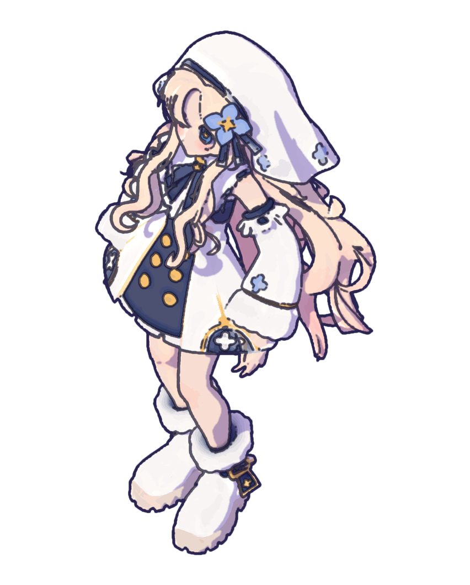
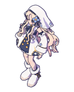
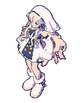
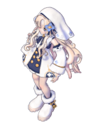
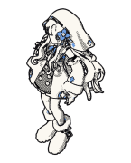
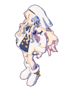
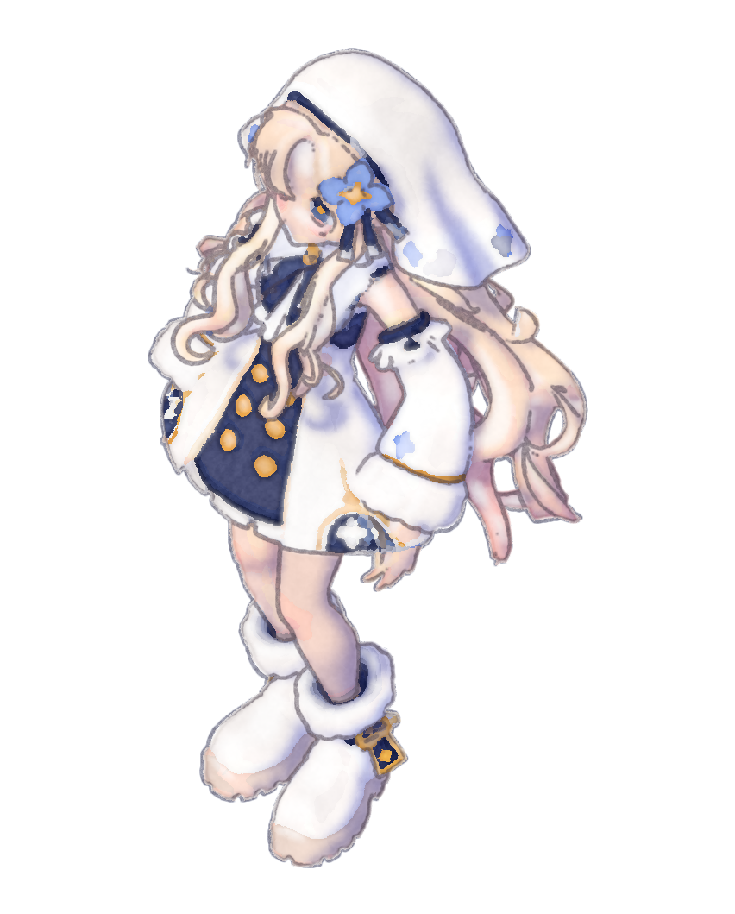
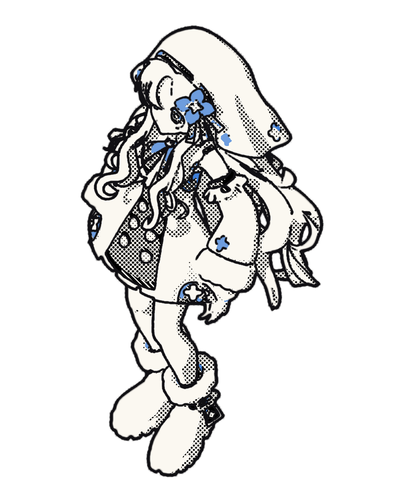
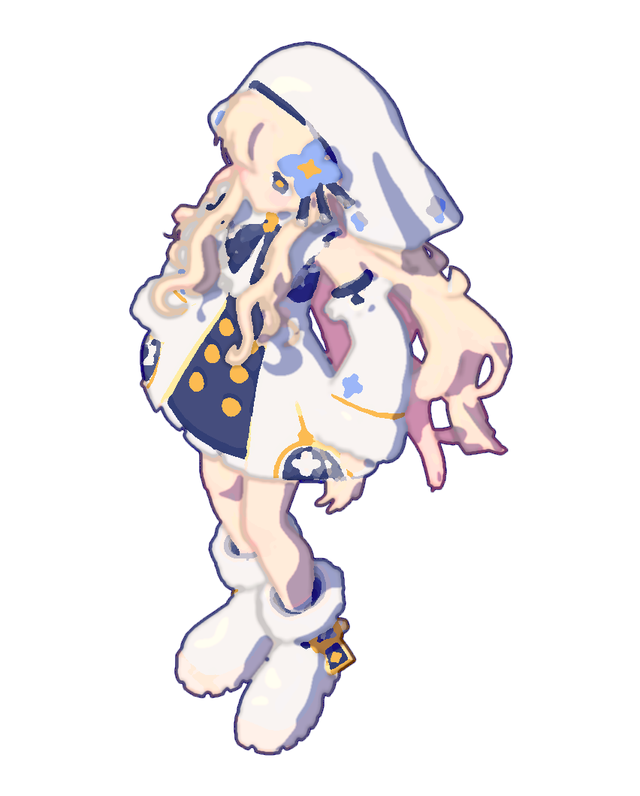

STYLE 1
애니메 셀
남보라 외곽선, 라벤더 2단 그림자, 왼쪽 림라이트.
- 강점
- 게임 크기에서 가장 또렷합니다. 눈의 별과 꽃 장식이 그대로 읽힙니다.
- 주의
- 곱슬머리 안쪽 선이 많아 작은 크기에서 약간 복잡합니다.
- 애니
- 선·그림자가 자동이라 프레임이 늘어도 작업량이 거의 같습니다.
01-anime-cel.png · 01-anime-cel-game.png
텍스처·리깅된 이리스 3D 모델을 45도 쿼터뷰로 렌더링해 다섯 그림체로 합성했습니다. 모두 같은 모델·자세·카메라에서 나왔습니다.






남보라 외곽선, 라벤더 2단 그림자, 왼쪽 림라이트.
22색 팔레트, 6×6 블록 대표색, 1px 선택 외곽선. 실제 크기 142×176.

물감이 고이는 가장자리, 종이 여백, 살짝 어긋난 연필 밑선.

흑백 펜선과 45도 망점, 꽃·눈·클로버 문양만 파랑 별색.

선 없이 면으로만, 더 차갑고 진한 그림자, 같은 색 계열 외곽 띠.